Acuerdos 1904 de 2025 y 1944 de 2026 · Consejo Directivo
La Universidad ya tiene reglas de IA. Y ya le aplican.
Cincuenta y dos páginas de reglamento, resumidas por rol. Cada afirmación va con la cita textual
y con el recorte exacto del acuerdo, para que usted pueda verificarla.
Lo que aplica a todos
Dos acuerdos regulan el uso de IA en la Universidad. El 1904 fija las reglas; el 1944
crea el formato con el que se declara su uso y los porcentajes máximos permitidos.
Acuerdo 1904 de 2025
Reglamento Institucional para el Uso de la Inteligencia Artificial. Define principios, deberes,
derechos y régimen disciplinario para toda la comunidad universitaria. 38 páginas.
Acuerdo 1944 de 2026
Adopta el formato FOR-IA-001, fija los momentos en que se presenta y establece los límites
porcentuales de uso de IA por tipo de trabajo académico. 14 páginas.
Los ocho principios
Centralidad Humana
La tecnología de IA es una herramienta al servicio de las personas. La interacción humana, el pensamiento crítico, la creatividad original y el juicio ético deben prevalecer siempre sobre las decisiones automatizadas. La IA potencia, no reemplaza, la capacidad humana.
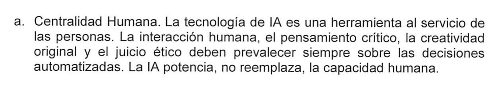
Acuerdo 1904 de 2025 · p. 3
La máquina no decide por usted. Usted decide, con la máquina al lado.
Responsabilidad y Rendición de Cuentas
Cada usuario es el único responsable del contenido que genera, valida o difunde utilizando herramientas de IA. La responsabilidad final sobre la veracidad, la calidad y las consecuencias del trabajo o de las decisiones no es delegable ni a la máquina ni a la universidad.
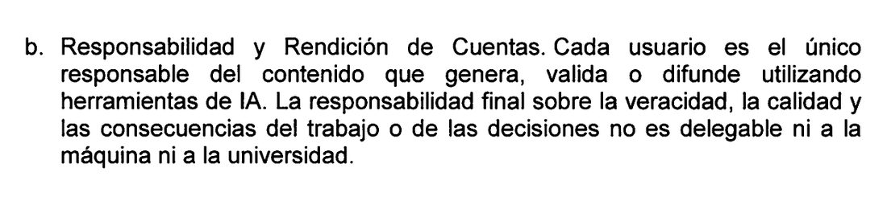
Acuerdo 1904 de 2025 · p. 4
«No es delegable». Ni a la IA ni a la Universidad. Si lo firma, responde usted.
Integridad Académica y Científica
La honestidad, la transparencia y la originalidad son los pilares de la vida académica. La IA debe usarse para enriquecer el aprendizaje y la investigación, no para cometer plagio, falsificar datos o incurrir en cualquier forma de deshonestidad.
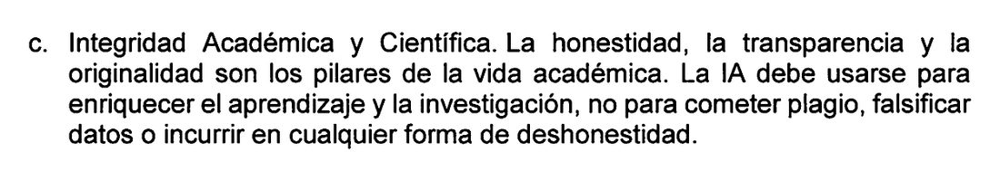
Acuerdo 1904 de 2025 · p. 4
Usarla para aprender más: sí. Usarla para no aprender: fraude.
Evaluación Crítica
Todo resultado producido por una IA debe ser tratado con escepticismo. Es un deber verificar la información, identificar posibles sesgos, errores o «alucinaciones», y contrastar los resultados con fuentes fiables antes de su uso o difusión.
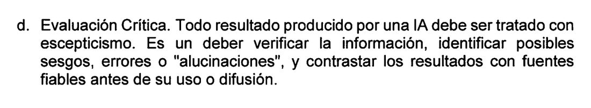
Acuerdo 1904 de 2025 · p. 4
Verificar no es una recomendación. Dice «es un deber».
Privacidad y Confidencialidad
Se debe proteger rigurosamente la información personal y los datos sensibles propios y de terceros. Está prohibido introducir datos confidenciales en plataformas de IA que no garanticen su protección, en cumplimiento con la legislación vigente y las normas institucionales al respecto.
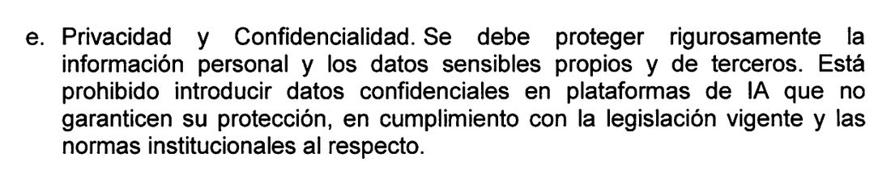
Acuerdo 1904 de 2025 · p. 4
Aquí está la historia clínica del caso 1. Dice «está prohibido».
Equidad e Inclusión
La adopción de la IA debe buscar reducir las brechas existentes, no crear nuevas. Se debe garantizar un acceso equitativo a las herramientas y oportunidades, y vigilar activamente que los algoritmos no perpetúen ni amplifiquen sesgos discriminatorios.
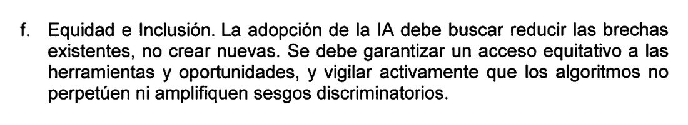
Acuerdo 1904 de 2025 · p. 4
Por esto el curso no exige ninguna licencia de pago.
Transparencia
Los usuarios deben ser transparentes sobre su uso de la IA. La Universidad, a su vez, será transparente sobre los sistemas de IA que implemente en sus procesos administrativos y académicos, informando a la comunidad sobre su uso y funcionamiento general.
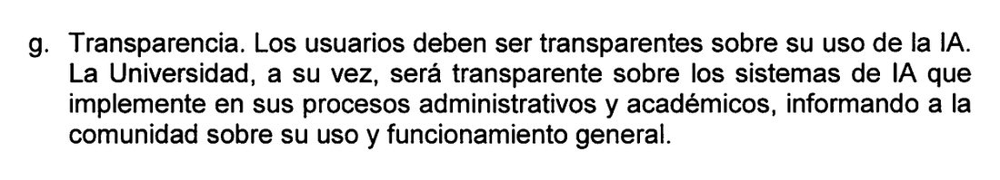
Acuerdo 1904 de 2025 · p. 4
Va en las dos direcciones: usted declara, y la Universidad también.
Responsabilidad Social Universitaria y Sostenibilidad
Compromiso con el bien común, reducción de brechas, diseño centrado en las comunidades y minimización del impacto ambiental (Green AI).
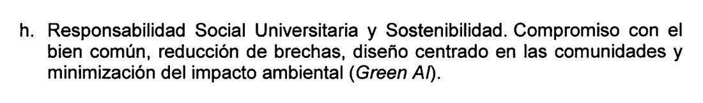
Acuerdo 1904 de 2025 · p. 4
El costo ambiental entra al reglamento. Es el criterio de sostenibilidad que vimos en clase.
Las faltas
1. Fraude académico y plagio
La presentación de trabajos, ensayos, códigos de programación, exámenes o cualquier producto académico generado por una IA como si fuera de autoría propia, constituye una falta contra la integridad académica. Dicha conducta será tratada como plagio o fraude, según lo estipulado en los Reglamentos Estudiantiles […] y acarreará las sanciones disciplinarias correspondientes.
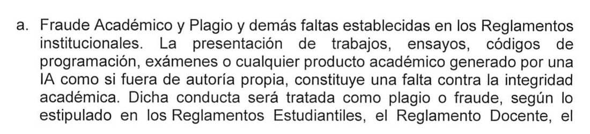
Acuerdo 1904 de 2025 · p. 37
No es una categoría nueva y más suave. Entra por la puerta del plagio, con las sanciones del plagio.
2. Conducta científica inapropiada
La utilización de IA para fabricar, falsificar o manipular datos en un proyecto de investigación, así como el no declarar su uso en la metodología o en el desarrollo de este, constituye una violación a la ética investigativa
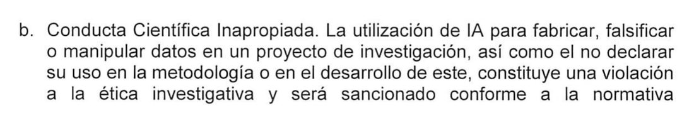
Acuerdo 1904 de 2025 · p. 37
Ojo a la segunda parte: no declararlo es falta, aunque los datos estén bien.
3. Actos contra la convivencia
La creación de contenido mediante IA (ej. deepfakes, textos difamatorios) para acosar, suplantar la identidad, intimidar o dañar la honra de cualquier miembro de la comunidad universitaria, será considerada una falta
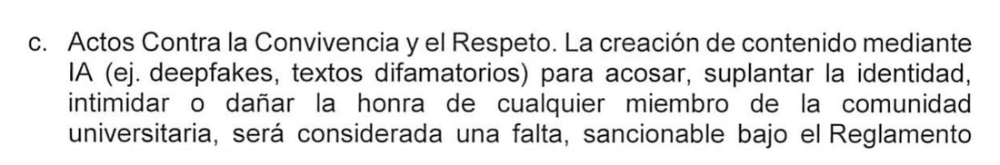
Acuerdo 1904 de 2025 · p. 37
Cubre a estudiantes, profesores y administrativos por igual.
4. Violación de confidencialidad
El uso de herramientas de IA para tratar datos personales de estudiantes, docentes o administrativos sin el debido consentimiento o en contravención de la Política de Tratamiento de Datos Personales, constituye una falta y compromete la responsabilidad del individuo implicado.
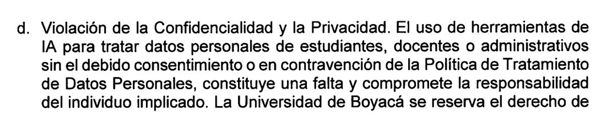
Acuerdo 1904 de 2025 · p. 38
«Compromete la responsabilidad del individuo implicado». No la de la Universidad: la suya.
Por qué le aplica sin firmar nada
Por qué le aplica sin haber firmado nada
El presente Reglamento de IA hace parte integral de los contratos de trabajo de funcionarios y del acuerdo de matrícula de los estudiantes de pregrado y postgrado, de los estudiantes de cursos y diplomados e incluye a los graduandos de la Universidad de Boyacá.
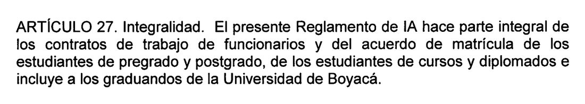
Acuerdo 1904 de 2025 · p. 38
Cuando usted se matriculó, aceptó esto. No hay que firmar nada aparte. Y el artículo 28 dice que rige «a partir de su aprobación»: desde el 28 de noviembre de 2025.
Si usted es estudiante
Catorce usos concretos sacados del reglamento, sus nueve deberes, sus nueve derechos,
y el formato que debe entregar para que le validen el trabajo de grado.
¿Puedo o no puedo?
PERMITIDO
Desglose de conceptos complejos
Utilizar la IA como un tutor para desglosar teorías, modelos o conceptos abstractos.
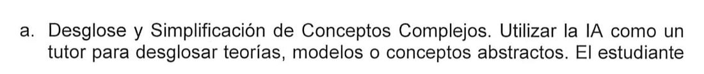
Acuerdo 1904 de 2025 · p. 15
PERMITIDO
Lluvia de ideas
Interactuar con la IA como un interlocutor para debatir ideas. Se le puede pedir que actúe como un crítico, que proponga contraargumentos a una tesis
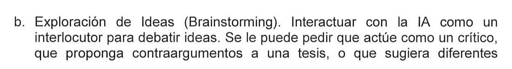
Acuerdo 1904 de 2025 · p. 15
PERMITIDO
Mapas conceptuales
Pedir a la IA que organice un tema central en un mapa conceptual o un esquema jerárquico.
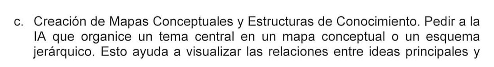
Acuerdo 1904 de 2025 · p. 15
PERMITIDO
Cronogramas de estudio
Emplear la IA para diseñar un plan actividades de estudio detallado para un período académico, un examen final o un proyecto de gran envergadura.
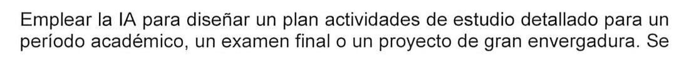
Acuerdo 1904 de 2025 · p. 15
CONDICIONADO
Búsqueda bibliográfica preliminar
es una responsabilidad ineludible del estudiante buscar, leer y validar estas fuentes en las bases de datos académicas de la universidad.
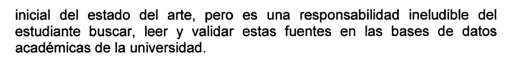
Acuerdo 1904 de 2025 · p. 16
CONDICIONADO
Mejorar el estilo de un borrador propio
Una vez que el estudiante ha redactado un borrador con sus propias ideas y palabras, puede usar la IA como un editor avanzado.
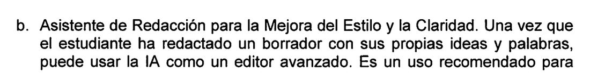
Acuerdo 1904 de 2025 · p. 16
CONDICIONADO
Generar código o fórmulas
Es responsabilidad absoluta del estudiante comprender cada línea del código o cada paso de la fórmula, ser capaz de explicar su lógica, adaptarla a su proyecto y documentarla adecuadamente.
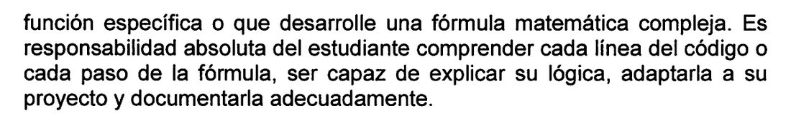
Acuerdo 1904 de 2025 · p. 16
CONDICIONADO
Crear imágenes para trabajos
El estudiante debe asegurarse de que estas imágenes sean conceptualmente precisas y debe citar la herramienta utilizada
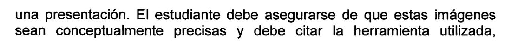
Acuerdo 1904 de 2025 · p. 16
PERMITIDO
Simulacro de sustentación
Prepararse para una sustentación pidiéndole a la IA que asuma el rol de un jurado evaluador.
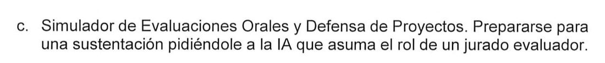
Acuerdo 1904 de 2025 · p. 17
PERMITIDO
Practicar idiomas
Utilizar la IA para mantener conversaciones escritas o de voz en otro idioma.
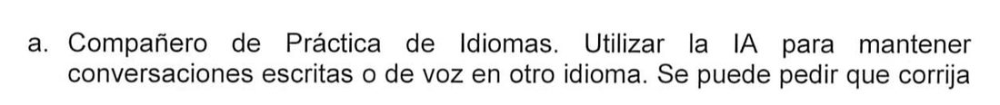
Acuerdo 1904 de 2025 · p. 17
PROHIBIDO
Generar el trabajo y entregarlo como propio
Queda estrictamente prohibido el uso de herramientas de IA para generar textos, código, soluciones a problemas o cualquier otro contenido y presentarlo como una creación propia.
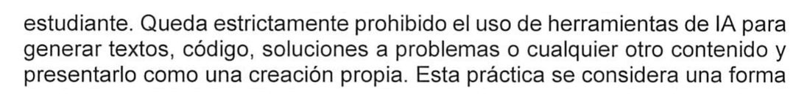
Acuerdo 1904 de 2025 · p. 25
PROHIBIDO
Pegar datos personales o de salud
la prohibición de introducir información personal sensible, como números de identificación, datos de salud, información financiera
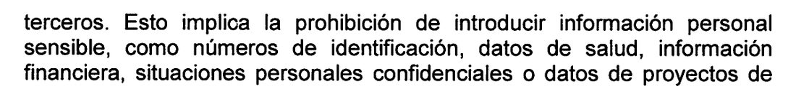
Acuerdo 1904 de 2025 · p. 26
PROHIBIDO
Deepfakes de compañeros o docentes
Queda terminantemente prohibido el uso de IA para […] suplantar la identidad de compañeros o docentes (deepfakes)
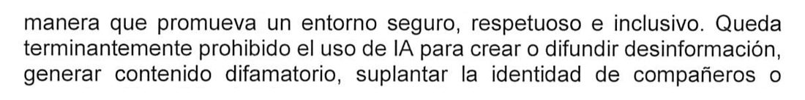
Acuerdo 1904 de 2025 · p. 27
PROHIBIDO
Usar IA sin declararlo
el estudiante está obligado a declarar de manera explícita y detallada el uso de cualquier herramienta de IA en la elaboración de sus trabajos.
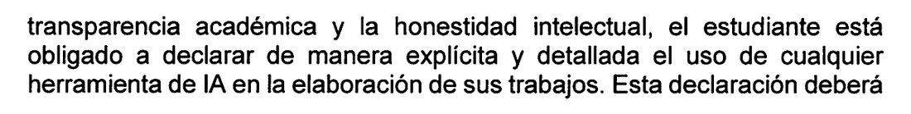
Acuerdo 1904 de 2025 · p. 26
Sus nueve deberes
Integridad académica y originalidad
Queda estrictamente prohibido el uso de herramientas de IA para generar textos, código, soluciones a problemas o cualquier otro contenido y presentarlo como una creación propia. Esta práctica se considera una forma de deshonestidad académica, constituye plagio, y será sancionada según el Reglamento estudiantil vigente.
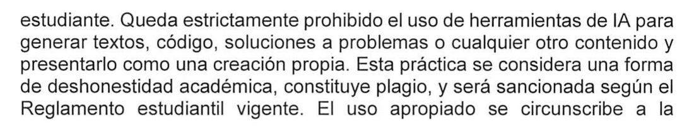
Acuerdo 1904 de 2025 · p. 25
El uso apropiado se circunscribe a la asistencia en fases preliminares como la ideación de temas, la esquematización de argumentos o la optimización estilística y gramatical de un contenido ya creado y comprendido por el estudiante.
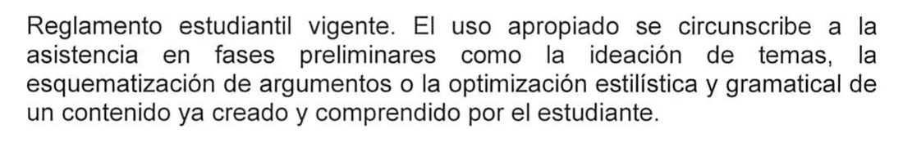
Acuerdo 1904 de 2025 · p. 25
Generar y presentar como propio = plagio. Con esas palabras.
Apropiación del conocimiento
Las herramientas de IA deben ser empleadas como un catalizador para la comprensión profunda, no como un mecanismo para eludir el estudio y la reflexión.
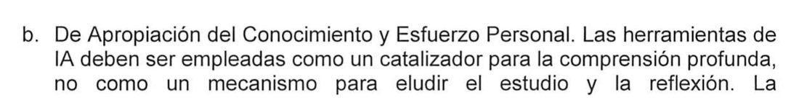
Acuerdo 1904 de 2025 · p. 25
Puede usarla para entender más rápido. No para no entender.
Pensamiento crítico y verificación
El estudiante debe operar bajo la premisa de que los sistemas de IA no son infalibles y pueden generar información incorrecta, sesgada, desactualizada o ficticia («alucinaciones»). Es su responsabilidad indelegable ejercer un escepticismo saludable y validar rigurosamente cualquier dato, afirmación o fuente proporcionada por una IA.
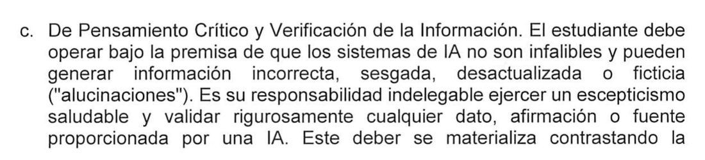
Acuerdo 1904 de 2025 · p. 25
Este deber se materializa contrastando la información con fuentes académicas primarias y secundarias fiables, como artículos de revistas indexadas, libros y bases de datos científicas suscritas por la universidad. La confianza ciega en la información generada por una máquina, sin un proceso de verificación diligente, denota una falta de rigor académico.
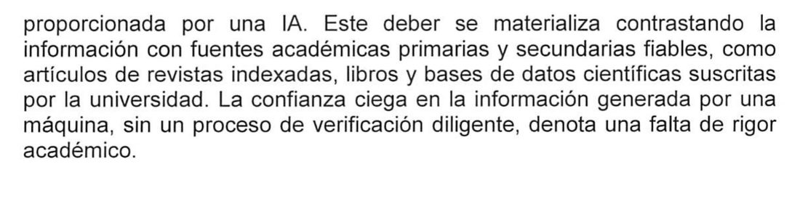
Acuerdo 1904 de 2025 · p. 25
«Responsabilidad indelegable». El caso 3 de hoy, en lenguaje de reglamento.
Declaración y atribución explícita
el estudiante está obligado a declarar de manera explícita y detallada el uso de cualquier herramienta de IA en la elaboración de sus trabajos. […] Dicha atribución debe detallar qué herramienta se utilizó, en qué fases del trabajo y con qué propósito específico.
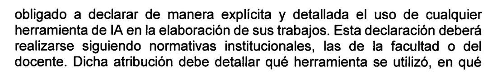
Acuerdo 1904 de 2025 · p. 26
Los tres campos de la plantilla de declaración de este curso salen literalmente de aquí.
Protección de datos personales y sensibles
Esto implica la prohibición de introducir información personal sensible, como números de identificación, datos de salud, información financiera, situaciones personales confidenciales o datos de proyectos de investigación no publicados, en plataformas de IA, especialmente en aquellas de carácter público o cuyos términos de servicio no garanticen la confidencialidad absoluta.
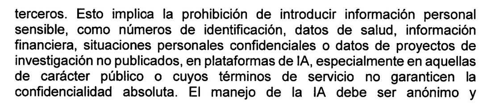
Acuerdo 1904 de 2025 · p. 26
El manejo de la IA debe ser anónimo y despersonalizado para evitar que la información privada sea utilizada para entrenar modelos o sea expuesta a brechas de seguridad.
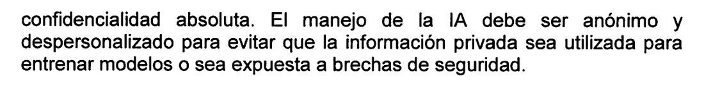
Acuerdo 1904 de 2025 · p. 26
Casos 1, 2 y 5 de hoy. La lista incluye «datos de salud» de forma expresa.
Diálogo y consulta académica
El principal referente para la orientación académica es y seguirá siendo el docente. Ante cualquier duda sobre los límites del uso de la IA en una asignatura o tarea, la responsabilidad del estudiante es buscar proactivamente la aclaración y la orientación de su docente.
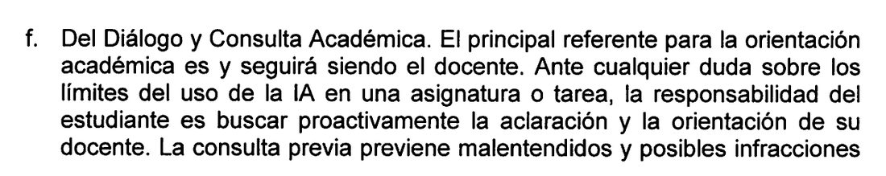
Acuerdo 1904 de 2025 · p. 26
Si tiene dudas de si puede usarla en una materia, pregúntele al profesor. Preguntar lo protege.
Respeto a la propiedad intelectual
está prohibido utilizar la IA de manera que infrinja deliberadamente la propiedad intelectual de terceros. Esto incluye la reproducción no autorizada de textos, imágenes, música o cualquier otra obra protegida.
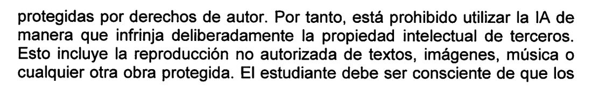
Acuerdo 1904 de 2025 · p. 26
El caso 4, el del render. Aplica a imagen, música y texto.
Ciudadanía digital y convivencia
Queda terminantemente prohibido el uso de IA para crear o difundir desinformación, generar contenido difamatorio, suplantar la identidad de compañeros o docentes (deepfakes), o llevar a cabo cualquier forma de acoso, intimidación o discurso de odio.
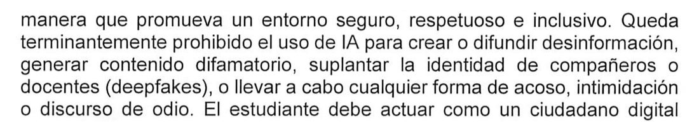
Acuerdo 1904 de 2025 · p. 27
Los deepfakes de compañeros o profesores están nombrados explícitamente.
Bienestar y desarrollo cognitivo sostenible
Esto implica un uso consciente y moderado de estas herramientas para evitar una dependencia excesiva que pueda atrofiar habilidades fundamentales como la memoria, el pensamiento crítico autónomo, la resolución de problemas sin asistencia tecnológica y la creatividad original.
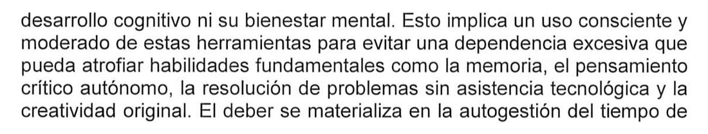
Acuerdo 1904 de 2025 · p. 27
El deber se materializa en la autogestión del tiempo de uso, en la priorización del esfuerzo mental propio antes de recurrir a la asistencia de la IA, y en la reflexión crítica sobre cómo el uso de estas herramientas está impactando sus propios procesos de pensamiento y aprendizaje a largo plazo.
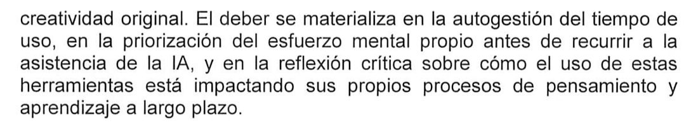
Acuerdo 1904 de 2025 · p. 27
Este es el más raro de todos: un reglamento preocupado por que usted no se atrofie. Es Idiocracy escrito en lenguaje normativo.
Sus nueve derechos
Al uso formativo y responsable
A utilizar herramientas de IA como apoyo a su aprendizaje cuando estén permitidas, siempre que se respeten la integridad académica y los lineamientos institucionales.
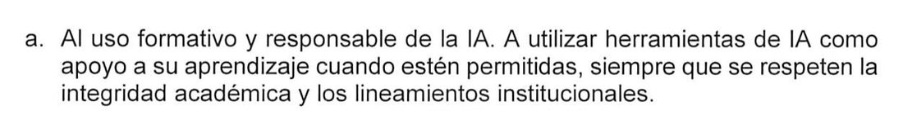
Acuerdo 1904 de 2025 · p. 27
Usarla no es un privilegio que le conceden. Es un derecho suyo.
A que le digan qué se permite
A recibir de cada docente indicaciones explícitas sobre qué usos de IA están permitidos, restringidos o prohibidos en una actividad académica.
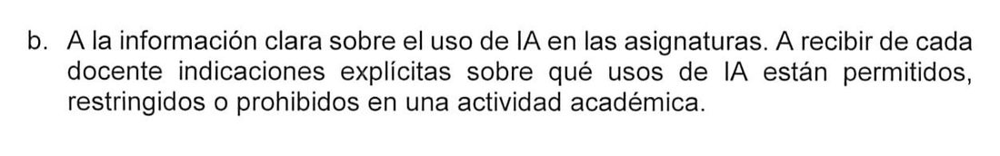
Acuerdo 1904 de 2025 · p. 27
Si un profesor no dice nada y después lo sanciona, ese profesor incumplió el reglamento.
A saber si lo están evaluando con IA
A ser informados cuando se empleen sistemas de IA para apoyar la calificación, el proctoring o cualquier forma de monitoreo académico, incluyendo su finalidad y el tipo de datos procesados.
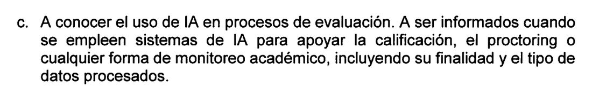
Acuerdo 1904 de 2025 · p. 28
Tienen derecho a saber si un algoritmo los está calificando o vigilando.
A que sus datos no entren a cualquier sistema
A que sus datos personales, académicos y de evaluación no sean introducidos en sistemas de IA que no cumplan la normativa de protección de datos o las políticas institucionales.
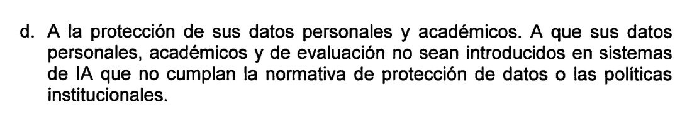
Acuerdo 1904 de 2025 · p. 28
La misma regla que les aplica a ustedes, le aplica a la institución con los datos de ustedes.
A que un humano revise
A solicitar revisión por parte de una persona responsable cuando una decisión académica afecte de manera significativa su trayectoria y haya sido tomada o sugerida por un sistema de IA.
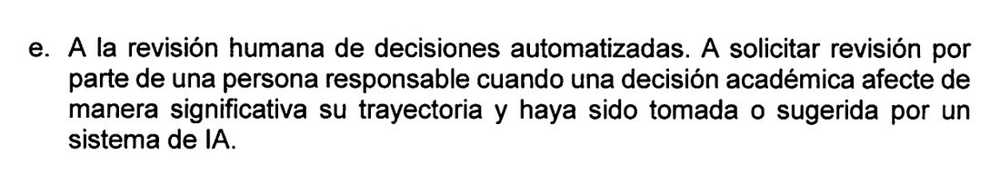
Acuerdo 1904 de 2025 · p. 28
Si un algoritmo influyó en algo que afecta su carrera, puede exigir que lo mire una persona.
A igualdad de acceso
A contar, en la medida de las posibilidades institucionales, con acceso equitativo a las herramientas de IA aprobadas o con alternativas académicamente equivalentes cuando existan barreras tecnológicas o de conectividad.
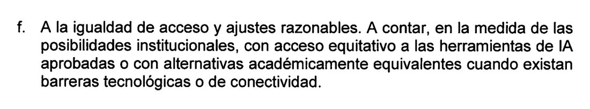
Acuerdo 1904 de 2025 · p. 28
Nadie puede exigirles una herramienta de pago sin darles una alternativa.
A que los formen
A recibir orientación y espacios de formación que fortalezcan su capacidad para utilizar la IA con pensamiento crítico, responsabilidad y respeto por la integridad académica.
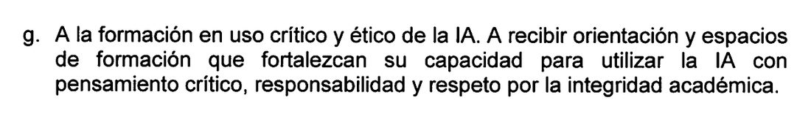
Acuerdo 1904 de 2025 · p. 28
Esta electiva es la Universidad cumpliendo este artículo.
Al reconocimiento de su autoría
A que, aun cuando empleen herramientas de IA como apoyo, se reconozca su aporte intelectual original en los trabajos académicos, y a que no se les exija ceder de manera injustificada sus derechos de autor.
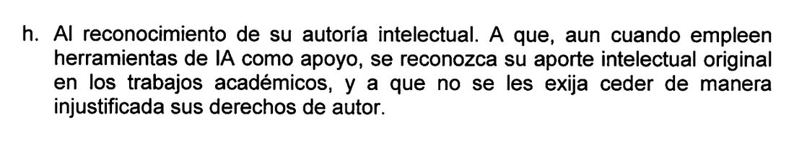
Acuerdo 1904 de 2025 · p. 28
Declarar que usó IA no le quita la autoría de lo que sí es suyo.
A un entorno digital seguro
A que la IA no sea utilizada por otros miembros de la comunidad para acosarlos, suplantar su identidad o vulnerar su honra, y a contar con canales para denunciar dichas conductas.
Acuerdo 1904 de 2025 · p. 28
Si alguien hace un deepfake de usted, hay a quién denunciarlo.
Cuánta IA puede usar — Acuerdo 1944, artículo 7
Son umbrales máximos institucionales. El docente o el director pueden fijar límites
más estrictos, comunicándolo por escrito al inicio del proceso.
Tipo de trabajo
Máx. IA
Alerta
Prohibido
Observación
Tarea de asignatura, ensayo o trabajo de curso
Hasta 30 %
21 – 30 %
Mayor de 30 %
Declaración obligatoria; el docente puede fijar límites más estrictos en el syllabus.
Informe de práctica formativa o de campo
Hasta 20 %
11 – 20 %
Mayor de 20 %
La reflexión y el análisis del practicante deben predominar.
Trabajo final de asignatura / proyecto integrador de semestre
Hasta 20 %
11 – 20 %
Mayor de 20 %
El docente puede ampliar hasta 30 % con justificación pedagógica documentada.
Trabajo de Grado de Pregrado
Hasta 20 %
11 – 20 %
Mayor de 20 %
Director del trabajo verifica coherencia entre el FOR-IA-001 y el texto.
Trabajo de Especialización
Hasta 20 %
11 – 20 %
Mayor de 20 %
Director y comité de programa verifican la coherencia metodológica.
Tesis de Maestría
Hasta 15 %
10 – 15 %
Mayor de 15 %
Exige justificación metodológica explícita de cada uso de IA.
Tesis de Doctorado
Hasta 10 %
6 – 10 %
Mayor de 10 %
Los aportes originales deben ser inequívocamente del autor.
Artículo científico o ponencia
Hasta 15 %
10 – 15 %
Mayor de 15 %
Declaración en sección metodológica del artículo.
Proyecto de investigación (CIPADE / Vicerrectoría)
Hasta 20 %
11 – 20 %
Mayor de 20 %
Aplica a cada producto derivado individualmente.
Producto de consultoría o extensión universitaria
Hasta 25 %
16 – 25 %
Mayor de 25 %
El responsable institucional valida y firma la declaración.
Estos porcentajes no aplican a trabajos cuyo objeto de estudio sea la
Inteligencia Artificial. El uso exclusivo para corrección gramatical, estilo o traducción de un borrador
propio tampoco computa, pero sí debe declararse en la sección 4 del FOR-IA-001.
Cuándo entrega el FOR-IA-001
Pregrado y especialización
Inscripción del anteproyecto o propuesta de trabajo de grado. Sin el formato, no se puede radicar el trabajo.
Entrega final del documento escrito. El director firma la sección 7.
Maestría
Aprobación del anteproyecto por el Comité de Investigaciones.
Presentación del informe de avance (primer corte).
Entrega final de la tesis.
Doctorado
Aprobación del proyecto por el Comité Doctoral, con el plan de gobernanza de IA.
Informe de avance anual.
Pre-defensa, si aplica en el programa.
Entrega final de la tesis doctoral.
Antes de inscribir el anteproyecto debe asistir y aprobar el taller institucional
“IA en tu trabajo de grado y en tu investigación”, de dos horas. La coordinación del programa
certifica el cumplimiento. Sin el formato, la Secretaría General suspende el trámite de grado.
Si usted es docente
Sus deberes y derechos como guía del proceso formativo, más lo que el Acuerdo 1944 le permite decidir sobre los límites de uso en sus asignaturas.
Sus deberes — artículo 19
Art. 19 · a
De Diseño Pedagógico y Evaluativo Innovador con IA
El docente tiene la responsabilidad de evolucionar sus estrategias de enseñanza y evaluación para responder al nuevo contexto tecnológico y especialmente de la IA. Esto implica diseñar experiencias de aprendizaje y métodos de evaluación que enfaticen el desarrollo de competencias de orden superior, como el pensamiento crítico, la resolución de problemas complejos, la creatividad y la argumentación oral. La forma de…
Acuerdo 1904 de 2025 · Art. 19, literal a · p. 28
Art. 19 · b
De Mentoría y Orientación Pedagógica Explícita
Es responsabilidad del docente actuar como tutor, estableciendo un marco de uso de la IA claro y explícito para sus estudiantes. Este deber se ejerce comunicando de manera inequívoca en el Syllabus y en las instrucciones de cada tarea qué herramientas de IA están permitidas, para qué fines y cómo debe ser reportado su uso. La orientación debe verificar y controlar el uso de la IA en los trabajos presentados e…
Acuerdo 1904 de 2025 · Art. 19, literal b · p. 29
Art. 19 · c
De Fomentar la Creatividad y el Pensamiento Crítico
El docente debe promover activamente que los estudiantes utilicen la IA como una herramienta de ayuda y como una forma de incentivar la innovación con el compromiso de verificar el conocimiento adquirido por parte del estudiante. Esto se logra diseñando desafíos académicos donde la IA actúe como un socio de ideación, una herramienta de prototipado rápido o un generador de escenarios hipotéticos que estimulen la…
Acuerdo 1904 de 2025 · Art. 19, literal c · p. 29
Art. 19 · d
De Actualización y Desarrollo Profesional Continuo
El docente tiene el deber de mantenerse activamente informado sobre la rápida evolución de las tecnologías de IA y sus implicaciones pedagógicas y disciplinares. Esta responsabilidad se materializa mediante la participación en programas de formación, la exploración autónoma de nuevas herramientas, la colaboración en comunidades de práctica docente y la adaptación continua de sus métodos de enseñanza para asegurar su…
Acuerdo 1904 de 2025 · Art. 19, literal d · p. 29
Art. 19 · e
De Transparencia y Protección de Datos Estudiantiles
El docente debe ser completamente transparente si utiliza sistemas de IA en su labor docente, Acuerdo 1804 Consejo Directivo del 28 de noviembre de 2025 30 por ejemplo, para la evaluación de trabajos o la personalización de la retroalimentación. Asimismo, tiene la responsabilidad ineludible de proteger la privacidad de sus estudiantes, lo que prohíbe cargar información personal O académica identificable en…
Acuerdo 1904 de 2025 · Art. 19, literal e · p. 30
Art. 19 · f
De Liderazgo en la Evolución Curricular de su Disciplina
Esta responsabilidad trasciende la adaptación de cursos individuales y posiciona al docente como un agente clave en la transformación de su campo de estudio. El docente tiene el deber de analizar prospectivamente cómo la IA está redefiniendo las competencias profesionales, los marcos teóricos y las prácticas de su disciplina. A partir de este análisis, debe proponer la actualización de los planes de estudio,…
Acuerdo 1904 de 2025 · Art. 19, literal f · p. 30
Art. 19 · g
De Garantizar la Equidad y la Accesibilidad en el Uso de la IA
El docente debe ser un garante de la equidad en su aula. Es su responsabilidad asegurarse de que la integración de la IA en sus prácticas pedagógicas no cree o aumente las brechas entre los estudiantes. Esto implica tomar medidas conscientes para no depender exclusivamente de herramientas de IA de pago o que requieran un alto poder computacional. El deber se materializa al priorizar el uso de herramientas de acceso…
Acuerdo 1904 de 2025 · Art. 19, literal g · p. 30
Art. 19 · h
De Modelar la Vulnerabilidad Intelectual y el Aprendizaje Permanente
En un entorno tecnológico que cambia rápidamente, el docente tiene la responsabilidad de modelar para sus estudiantes una de las competencias más importantes del siglo XXI: la capacidad de aprender, desaprender y reaprender. Esto implica abandonar la postura del "experto que todo lo sabe" y adoptar la de un "aprendiz avanzado y guía". El docente debe mostrarse abierto a explorar nuevas herramientas junto a sus…
Acuerdo 1904 de 2025 · Art. 19, literal h · p. 30
Sus derechos — artículo 20
Art. 20 · a
A la autonomía pedagógica en la integración de IA
A decidir, dentro del marco de los lineamientos institucionales, cómo y en qué medida integrar herramientas de IA en sus cursos, metodologías y estrategias de
Acuerdo 1904 de 2025 · Art. 20, literal a · p. 31
Art. 20 · b
A la formación y acompañamiento institucional
A acceder a programas de capacitación, actualización y apoyo técnico que les permitan usar la IA de manera pedagógicamente pertinente, ética y
Acuerdo 1904 de 2025 · Art. 20, literal b · p. 31
Art. 20 · c
A disponer de herramientas institucionales autorizadas
A contar, en la medida de las capacidades de la Universidad, con acceso a plataformas de IA licenciadas o aprobadas institucionalmente para apoyar la docencia y la
Acuerdo 1904 de 2025 · Art. 20, literal c · p. 31
Art. 20 · d
A la protección de su autonomía y juicio profesional
A que ningún sistema de IA sustituya su criterio académico en decisiones de evaluación, aprobación o reprobación de estudiantes, ni en la definición de contenidos
Acuerdo 1904 de 2025 · Art. 20, literal d · p. 31
Art. 20 · e
A la protección de sus datos y producción intelectual
A que sus materiales docentes, investigaciones y datos personales no se carguen en sistemas de IA sin su conocimiento y sin las garantías de protección de datos y propiedad intelectual exigidas por la normativa
Acuerdo 1904 de 2025 · Art. 20, literal e · p. 31
Art. 20 · f
A la transparencia en el uso institucional de IA
A ser informados cuando la Universidad implemente sistemas de IA que afecten sus funciones docentes o de investigación, así como sobre sus objetivos generales y el tipo de datos
Acuerdo 1904 de 2025 · Art. 20, literal f · p. 31
Art. 20 · g
A participar en la gobernanza de la IA
A ser consultados, a través de los órganos colegiados y comités pertinentes, en la elaboración, revisión y actualización de políticas institucionales sobre el uso de IA en la
Acuerdo 1904 de 2025 · Art. 20, literal g · p. 32
Art. 20 · h
A condiciones equitativas en la evaluación de su desempeño
A que los sistemas de IA que eventualmente apoyen la evaluación de su desempeño docente o investigativo no sean el único criterio de decisión y estén sujetos a supervisión y revisión
Acuerdo 1904 de 2025 · Art. 20, literal h · p. 32
Lo que el 1944 le agrega
Puede endurecer el límite
Los porcentajes del artículo 7 son máximos
institucionales. Usted puede fijar límites más estrictos en el syllabus o en el plan de trabajo,
comunicándolo por escrito al estudiante antes de iniciar el proceso.
Puede ampliar, con justificación
En el trabajo final de asignatura o
proyecto integrador puede ampliar hasta 30 % con justificación pedagógica documentada.
Verifica la coherencia
El director del trabajo verifica que lo declarado
en el FOR-IA-001 coincida con el texto entregado, y firma la sección 7.
Las herramientas de detección de contenido generado por IA disponibles en el LMS o en
SIIUB pueden apoyar la medición, pero no son el único ni el determinante criterio de evaluación.
Si usted es investigador
Rigor, trazabilidad y gobernanza de datos, más los cuatro momentos en que debe presentar el FOR-IA-001 a lo largo del proyecto.
Sus deberes — artículo 21
Art. 21 · a
De Rigor Científico y Validación de Resultados
El investigador es el garante final de la validez de su trabajo. Cualquier resultado, patrón o conclusión generado con la asistencia de una IA debe ser sometido a un riguroso proceso de validación independiente, utilizando métodos estadísticos y/o analíticos convencionales. No se puede delegar el juicio científico en un algoritmo. La IA es un instrumento de información y/o análisis, no una fuente de verdad…
Acuerdo 1904 de 2025 · Art. 21, literal a · p. 32
Art. 21 · b
De Transparencia y Reproducibilidad en la Metodología
Para asegurar la integridad y la reproducibilidad de la ciencia, el investigador está obligado a documentar y reportar de manera exhaustiva el uso de la IA en la sección metodológica de sus publicaciones. Debe especificar el modelo de IA utilizado (incluyendo su versión), los parámetros de configuración, la naturaleza de los datos de entrenamiento y el proceso exacto mediante el cual la herramienta fue empleada.…
Acuerdo 1904 de 2025 · Art. 21, literal b · p. 32
Art. 21 · c
De Ética en la Investigación, Manejo de Datos y Propiedad Intelectual
Toda investigación que emplee IA debe someterse y adherirse a los protocolos del Comité de Ética y Bioética y del comité de propiedad intelectual de la universidad. Esto es especialmente crítico cuando se utilizan seres vivos o bases de datos con información personal o institucional. El investigador debe garantizar la obtención de consentimientos informados, la completa anonimización de los datos, la gestión segura…
Acuerdo 1904 de 2025 · Art. 21, literal c · p. 32
Art. 21 · d
Sobre la Autoría y la Propiedad Intelectual
La autoría de una obra científica se reserva exclusivamente a las personas que han realizado una contribución intelectual sustancial a la misma. Las herramientas de IA, al ser instrumentos, no pueden ser designadas como coautoras. Su uso debe ser reconocido de forma apropiada, ya sea en la sección de metodología o en los agradecimientos, pero nunca en la línea de autores. El investigador es responsable de delimitar…
Acuerdo 1904 de 2025 · Art. 21, literal d · p. 33
Art. 21 · e
De Evaluación y Mitigación de Sesgos (equidad algorítmica)
El investigador tiene la responsabilidad primordial de analizar, identificar y mitigar activamente los sesgos que puedan estar presentes en los datos de entrenamiento, los modelos algorítmicos y los resultados de la investigación. Debe reconocer que la IA puede perpetuar y amplificar desigualdades sociales existentes. Este deber se ejerce mediante la implementación de técnicas de auditoría de sesgos en las distintas…
Acuerdo 1904 de 2025 · Art. 21, literal e · p. 33
Art. 21 · f
De Gobernanza y Procedencia de los Datos de Investigación (data provenance)
Más allá de la seguridad, el investigador es responsable de la gobernanza integral del ciclo de vida de los datos utilizados en su investigación. Esto implica mantener un registro meticuloso de la procedencia de los datos (provenance), asegurando que fueron obtenidos de manera lícita y ética. Debe garantizar la calidad, integridad y trazabilidad de los conjuntos de datos, especialmente aquellos utilizados para…
Acuerdo 1904 de 2025 · Art. 21, literal f · p. 33
Art. 21 · g
De Divulgación Científica y Compromiso Público
La responsabilidad del investigador se extiende más allá de la publicación en revistas especializadas. Tiene el deber de contribuir al diálogo público y a la comprensión social de la información generada de la IA. Esto se ejerce traduciendo los hallazgos complejos de su investigación a un lenguaje accesible para no expertos, participando en foros de divulgación, y colaborando con medios de comunicación y la sociedad…
Acuerdo 1904 de 2025 · Art. 21, literal g · p. 33
Sus derechos — artículo 22
Art. 22 · a
Al acceso a infraestructuras y herramientas de IA para investigación
Disponer, en la medida de las capacidades institucionales, de recursos tecnológicos, licencias y asesoría técnica que faciliten el empleo de IA en sus proyectos de
Acuerdo 1904 de 2025 · Art. 22, literal a · p. 34
Art. 22 · b
A apoyo ético y jurídico especializado
Recibir acompañamiento del Comité de Ética y Bioética y de las dependencias competentes para resolver dudas éticas, legales y de protección de datos asociadas al uso de IA en sus
Acuerdo 1904 de 2025 · Art. 22, literal b · p. 34
Art. 22 · c
A la libertad de elección metodológica
Definir con autonomía científica cuándo, cómo y en qué medida emplear herramientas de IA dentro de sus diseños de investigación, siempre que se respeten los lineamientos institucionales y la normativa
Acuerdo 1904 de 2025 · Art. 22, literal c · p. 34
Art. 22 · d
A la protección y gobernanza adecuada de los datos de investigación
Que los datos recolectados o generados en sus proyectos, incluidos los utilizados para entrenar modelos de IA, cuenten con medidas de seguridad, confidencialidad y trazabilidad acordes con las mejores prácticas científicas e
Acuerdo 1904 de 2025 · Art. 22, literal d · p. 34
Art. 22 · e
Al reconocimiento de la autoría humana
Que la autoría de artículos, libros, software y demás productos académicos recaiga en las personas que realizan aportes intelectuales sustanciales, dejando a la IA como herramienta y no como
Acuerdo 1904 de 2025 · Art. 22, literal e · p. 34
Art. 22 · f
A la transparencia en la valoración de la producción científica asistida por IA
Que el uso declarado de IA en etapas del proceso investigativo no sea motivo de descalificación automática de sus productos, sino que se valore su rigor metodológico y su aporte
Acuerdo 1904 de 2025 · Art. 22, literal f · p. 35
Art. 22 · g
A la protección de la propiedad intelectual de desarrollos basados en IA
Que la Universidad les brinde orientación y mecanismos para proteger, registrar y gestionar la propiedad intelectual de modelos, algoritmos, aplicaciones y demás desarrollos que involucren
Acuerdo 1904 de 2025 · Art. 22, literal g · p. 35
Art. 22 · h
A participar en la definición de políticas de IA para la investigación
Contribuir, a través del CIPADE y comités pertinentes, en la elaboración y actualización de lineamientos institucionales sobre la investigación con y sobre
Acuerdo 1904 de 2025 · Art. 22, literal h · p. 35
Cuándo entrega el FOR-IA-001
Investigador principal o equipo
Registro del proyecto en CIPADE o ante la Vicerrectoría, con el plan de gobernanza de IA.
Informes de avance periódicos, con el capítulo “Gobernanza del uso de IA en el período”.
Cada producto derivado lleva su propio formato diligenciado.
Informe final del proyecto.
El párrafo que debe ir en el texto — artículo 16
Durante la elaboración de este [artículo/proyecto/trabajo], los autores utilizaron [nombre de la herramienta, versión] con el propósito de [especificar: mejorar la claridad y fluidez del texto / realizar análisis estadístico / sintetizar literatura / traducir / generar figuras — según corresponda]. El output generado por la herramienta fue revisado, editado y validado críticamente por los autores, quienes asumen plena responsabilidad sobre el contenido final publicado. [Si no se utilizó IA: Los autores declaran que no utilizaron herramientas de IA en la elaboración de este artículo.]
Qué evalúa el Comité de Ética y Bioética
Minimización de datos
Que entre la menor cantidad posible de datos
personales identificables y existan medidas de anonimización previa.
Consentimiento cualificado
Que el consentimiento informado especifique
qué herramienta se usará y con qué finalidad.
Riesgo de sesgos
Que se hayan identificado y documentado los sesgos
posibles y las estrategias de mitigación.
Reproducibilidad
Que estén documentados modelo, versión y parámetros,
de modo que los hallazgos puedan replicarse.
Si usted es funcionario o directivo
Sus deberes de infraestructura y supervisión, y los derechos que lo protegen frente a decisiones automatizadas.
Sus deberes — artículo 23
Art. 23 · a
De Proveer una Infraestructura Tecnológica Segura y Adecuada
Es responsabilidad de la División de Tecnología, realizar una debida búsqueda para adquirir, licenciar o recomendar cualquier plataforma de IA. Se debe garantizar que las herramientas seleccionadas cumplan con los más altos estándares de seguridad, cifrado de datos y protección de la privacidad, asegurando la conformidad con la Ley 1581 de 2012 de Colombia y otras normativas aplicables. La infraestructura debe ser…
Acuerdo 1904 de 2025 · Art. 23, literal a · p. 35
Art. 23 · b
De Supervisión, Auditoría y Rendición de Cuentas
La institución debe establecer mecanismos formales para el monitoreo del uso de las tecnologías de IA, especialmente aquellas que toman decisiones que afectan a las personas. Esto incluye la realización de auditorías periódicas para detectar y mitigar sesgos algorítmicos, así como la creación de canales claros para que cualquier miembro de la comunidad pueda reportar fallos, comportamientos anómalos o resultados…
Acuerdo 1904 de 2025 · Art. 23, literal b · p. 35
Sus derechos — artículo 24
Art. 24 · a
Derecho a la información y transparencia sobre la IA institucional
Conocer las políticas, proyectos y sistemas de IA que se adopten y que puedan impactar sus funciones, procesos o condiciones
Acuerdo 1904 de 2025 · Art. 24, literal a · p. 36
Art. 24 · b
Derecho a la capacitación para el uso de IA
Recibir formación y acompañamiento para comprender, utilizar y gestionar las herramientas de IA vinculadas a sus
Acuerdo 1904 de 2025 · Art. 24, literal b · p. 36
Art. 24 · c
Derecho a la protección de sus datos personales, laborales y estratégicos
Que su información personal, laboral y, en el caso del personal directivo, la información estratégica institucional, sea tratada con confidencialidad y según la normativa de protección de
Acuerdo 1904 de 2025 · Art. 24, literal c · p. 36
Art. 24 · d
Derecho a la revisión humana de decisiones automatizadas
Solicitar revisión y explicación humana cuando decisiones relevantes sobre su desempeño, permanencia, promoción u otras condiciones laborales se fundamenten en sistemas de
Acuerdo 1904 de 2025 · Art. 24, literal d · p. 36
Art. 24 · e
Derecho al respeto de su criterio profesional y responsabilidad humana
Que la IA se utilice como herramienta de apoyo y no como sustituto de su juicio profesional ni de sus responsabilidades legales o
Acuerdo 1904 de 2025 · Art. 24, literal e · p. 36
Art. 24 · f
Derecho a participar en la definición y mejora de la IA institucional
Aportar, desde su rol, observaciones, sugerencias y criterios en la formulación, actualización y mejora de las políticas y sistemas de IA que afecten sus
Acuerdo 1904 de 2025 · Art. 24, literal f · p. 36
Art. 24 · g
Derecho a condiciones de trabajo equitativas en entornos mediadas por IA
Que la introducción de IA no genere cargas laborales desproporcionadas, vigilancia excesiva ni prácticas que vulneren su dignidad y
Acuerdo 1904 de 2025 · Art. 24, literal g · p. 36
Art. 24 · h
Derecho a la asesoría técnica y jurídica en la adopción y uso de IA
Contar con el apoyo de dependencias especializadas cuando deban evaluar, aprobar o utilizar sistemas de IA en los procesos administrativos o de
Acuerdo 1904 de 2025 · Art. 24, literal h · p. 36
Art. 24 · i
Derecho a la gestión responsable de riesgos asociados a la IA
Que existan mecanismos para identificar, evaluar y mitigar riesgos derivados del uso de IA, y a que puedan reportar fallas o impactos negativos para su análisis y
Acuerdo 1904 de 2025 · Art. 24, literal i · p. 36
El Acuerdo 1904 hace parte integral de los contratos de trabajo del personal docente y
administrativo. El incumplimiento se gestiona conforme al Reglamento Interno de Trabajo.
El formato FOR-IA-001
Es el instrumento oficial con el que se declara el uso o no uso de IA. Su diligenciamiento
es condición necesaria para la validez institucional del trabajo.
Las siete secciones
Identificación del trabajo y del autor o autores.
Declaración de uso o no uso de Inteligencia Artificial.
Detalle por herramienta o sistema de IA utilizado.
Fases del proceso en que intervino la IA (catorce fases).
Declaración sobre autoría, integridad académica y propiedad intelectual.
Observaciones adicionales y detalles técnicos.
Firmas del autor, director o docente evaluador, co-autores y sello institucional.
Dos versiones derivadas
FOR-IA-001-PUB
Versión condensada para publicaciones externas en revistas
indexadas o eventos científicos.
FOR-IA-001-S
Versión pedagógica simplificada para semilleros de
investigación y actividades formativas tempranas.
El párrafo de declaración — artículo 16
Durante la elaboración de este [artículo/proyecto/trabajo], los autores utilizaron [nombre de la herramienta, versión] con el propósito de [especificar: mejorar la claridad y fluidez del texto / realizar análisis estadístico / sintetizar literatura / traducir / generar figuras — según corresponda]. El output generado por la herramienta fue revisado, editado y validado críticamente por los autores, quienes asumen plena responsabilidad sobre el contenido final publicado. [Si no se utilizó IA: Los autores declaran que no utilizaron herramientas de IA en la elaboración de este artículo.]
Y ante la duda
Actividad de clase
El docente de la asignatura, su tutor o el Director de Programa.
Trabajo de grado o investigación
Su asesor o director, el Comité de Investigación, CIPADE.
Informe de gestión
Su jefe inmediato y, de ser necesario, su jefe superior jerárquico.